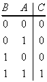
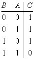
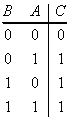

Audio
AudioTABLES
The functional link between variables can be described with Tables.
The table describing the functional link between N input and K output variables has 2N rows and N+ K columns.
Examples:
 | ||
 | ||
 | ||
 | ||
 |
| BOOLEAN ALGEBRA |
| Foreword |
| Logic links |
| Negation (NOT) |
| Product (AND) |
| Inverted Product (NAND) |
| Sum (OR) |
| Invertd Sum (NOR) |
| Exclusive sum (XOR) |
| Logical Functions |
| Sequential and combinatorial functions |
Tables
|
|
|
The functional link between variables can be described with Tables.
The table describing the functional link between N input and K output variables has 2N rows and N+ K columns.
Examples:
 | ||
 | ||
 | ||
| ||
|